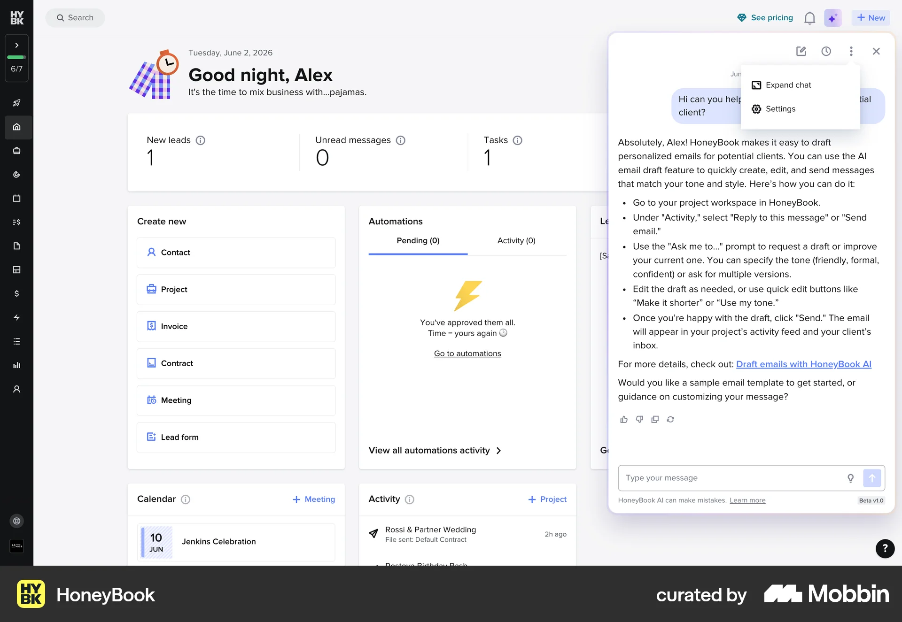

HoneyBook
AI assistant docked over the dashboard. · WEB

Visible patternA rounded, nearly full-height panel floats over the right edge with a small gap. It has a header with history, expand and close icons, a long answer, feedback icons and the composer pinned at the bottom. The page behind stays visible.
Adaptation for MorizThe core drawer shape: inset from the viewport, rounded, non-modal, with the composer pinned to the bottom.
CautionIt is dense for a marketing site. Keep the header to identity and close.
Open in Mobbin ↗